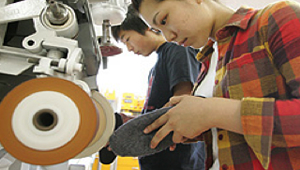

HOME > 整形靴技術者
整形靴技術者 せいけいぐつぎじゅつしゃ

仕事の概要
医学的な専門知識をもとに、靴製作やデザイン、販売などをおこなう整形靴技術者。活躍の分野は幅広く、整形靴製作企業では、医師や義肢装具士と連携し足に障害のある方のオーダー靴製作をおこないます。また、スポーツシューズメーカーに就職し、プロアスリートのスポーツシューズ製作・デザイン企画を行なうなど、多分野からの求人があります。
就職状況
アシックス リーガル ニューバランスアスレチックス マドラス ラッキーベル 西山靴研究所 フラウ 靴商店インターナショナル Ａｓｅｎｄｏｒｆ Ｓｈｏｐ（ドイツ） 川村義肢 東名ブレース 湘南義肢 澤村義肢 洛北義肢 大井製作所 ミニットアジア 足と靴の科学研究所 オットーボックジャパン ニチマン など
学びのスタイル
外反母趾・扁平足などのトラブルを抱える方や、プロ選手用の靴製作技術を学ぶのは国内で唯一。そのため業界から高い評価を得て、年齢を問わず多くの社会人入学生が学び、就職しています。2年間で8足の靴製作実習や企業内長期実習、本場ドイツのマイスター制度を模したカリキュラムで実践的技術を学びます。各種奨学金制度や分割支払い制度の利用により、計画的な学費返還が可能です。
学費の支払
303万円（入学金・授業料・実習費・教科書代・海外研修積立金など全て含む）
独立行政法人日本学生支援機構などの各種奨学金制度利用可能
年1回～12回までの分割払い制度あり
（無利子：入学金・諸経費は分割不可。奨学金と分割払い制度の併用可能）
目指す資格
プライマリーシューフィッター（要実務経験3年）
授業日
月～土
授業時間
9:30～16:20
年数
2年